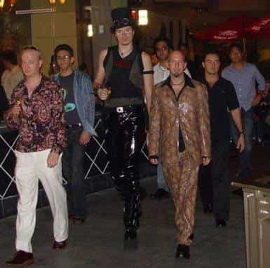

Rohan is a fiction and non-fiction writer in Melbourne, Australia. He believes masculinity is the cure to the issues ailing men today in the West.


I discovered ‘game’ in 2007, when I was 18 years old. A shy kid, I had not been close to my father growing up, and was mainly raised by women.
I immediately drank the ‘Kool-aid’ that the RSD’s of the world seemed to be offering—the idea that chasing lots of women was the key to happiness in life, and that the measure of a man’s success wasn’t how much money he made, or his physique, but how many women he could get.
“What’s the point of having money or a great physique”, I’d think to myself at the time, “if you can’t sleep with a ton of women.”
And so, I set off, an 18 year old ‘lost boy’ who had no idea how to be a man, chasing the self esteem boost that came from hedonism. Night club after night club, I thought I had landed on something profound, some cheat code to life. I looked at all the other men who didn’t ‘game’—men who were building their careers or eating their meals religiously to build a physique they wanted—and I laughed at them.

I was reasonably ‘popular’ with women for those couple of years—I had one night stands, favours performed on me in alleyways, and stuck my tongue in more alcohol and cigarette flavoured mouths than I can count.
The validation of women was powerful at that stage. As I made bad decisions in other areas of my life, like dropping out of law school and avoiding weightlifting (It’s hard to ‘lift’ three times a week when you’re regularly drinking heavily and chain-smoking), I continued to tell myself that success with women was the only measure of a man that mattered.
With the amount of sex on offer at the time for guys who knew ‘game’, it was hard to break the delusion. Fast forward 11 years, though, and the landscape has changed.
Women are no longer feminine. The little feminine energy that existed in 2007-08 (it was already dwindling then) has well and truly evaporated. As I walk around, I see that women have become miserable, angry consumers. Consumers of the newest smartphones and social media outlets, consumers of the latest fashion trends that leave nothing to the imagination, and, most of all, consumers of men.
Women have the highest expectations of men, but are really not prepared to offer much themselves. Add to that the fact that we’re now in the ‘MeToo’ era (where many women try and ruin a man for simply not living up to their lofty expectations) and it all makes for an uninspiring landscape.
Typical current day standards.
So, then, men must look elsewhere for meaning. Here are some ways I am bringing about that meaning in my own life:
I am currently reading Yukio Mishima’s book “Sun and Steel“, where he talks about his love of weight lifting. Mishima argues that although in modern society the body and soul have been seen as separate, the reality is the opposite.
The body is the primary expression of who you are in the world; more important than the words you speak or the work you do. Your body is your orchard, your temple; something capable of beautiful creation (bodybuilding) or abject destruction (obesity).
Yukio Mishima.
I am finding meaning in cultivating my body daily, weekly, and getting closer to my ideal vision of myself. I see this also as paying respect to my ancestors from hundreds of years ago, who surely had to be fitter than most people in modern Western society. The feeling of having a physique close to your ideal will give you much satisfaction, and, as Mishima described, be a “protective function in the face of the chaos around it”.
One thing I can’t fathom today is living the corporate life. Waking up at 6am to get on the train or other public transport by 7am, to be in a miserable, spiritually desolate office by 8.30am. Being surrounded by women who wear low cut tops, short dresses, and a ton of makeup, only to be readily ‘offended’ and ‘threatened’ if you so much look at their flesh on display.
I had a taste of this myself about three years ago, and I couldn’t get out of there fast enough. It was simply insufferable. The men were like caged animals. No wonder they looked so forward to Friday 6pm drinks; a time to drown their sorrows and forget about their life.
If you are in this trap, you most likely want to escape it. Find out something you do genuinely well, and work on it. Even if you make less than your 9-5, it is worth it.
Becoming emotionally and spiritually stronger, although it may sound ambiguous, is something I’m very proud of. At the start of 2017, I would wake up depressed almost every morning, contemplating whether life was worth living. I hated what was going on in society, and the sheer degeneration of people.
Through reading a range of materials in the last year or so—spiritual and religious texts, Nietzsche and other philosophers, red pill material, and novels from both the current day and many generations ago—I have started to form a world view that is more in touch with reality than the one being pushed today. I see the reality of human existence and biology more clearly, and can make conscious decisions about what to allow into my life, and what to eschew.
None of the above would be possible if I was still in the mode of “the more girls I can get, the more meaningful my life will be”; something that many men live by today, whether consciously or unconsciously.
So, stop thinking that today’s women will give you and meaning and fulfilment; by all means get your biological needs met, but look deeper in yourself, transcend this generation and culture, and live in a way that would give you true meaning in any era.
This barren time may seem hopeless, but it is an opportunity to become spiritually, physically and mentally stronger than you ever thought you could be.
Read More: Can The Ways Of Eastern European Men Inspire Us To Revitalize Western Masculinity?